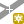

Georeferencování obrazových dat¶
V prostředí QGIS je možné pracovat s obrazovými daty - rastry. Jedná se o obrazová data s informací o jejich umístění v prostoru (tzv. souřadnicově připojená data). Existuje však obrovské množství obrazových dat, které nejsou prostorově umístěná a jsou to tedy pouze „obrázky“. Existuje však možnost, jak takovýmto datům určit jejich umístění v prostoru. Tento proces se nazývá georeferencování.
Využití¶
V současnosti je k dispozici velké množství obrazových dat, které nemají prostorovou informaci. Často je však žádané zobrazit si takováto data v GISu jako podkladová, nebo je dále využívat pro tvorbu vektorových dat. Typickým příkladem může být územní plán. Ten je často vypracován jako přerozdělení prostoru do různých kategorií. Výsledný produkt je často ve formátu PDF - bez prostorových informací. Abychom měli možnost pracovat s takovýmito daty jako s prostorovými, musíme využít nástroj pro georeferencování.
Tip
Pokud zvolený rastr obsahuje i jiné části než samotnou polohovou složku dat (například legendu, popisek, měřítko a jiné), tak je vhodné zpracovávat již ořezaný obrázek.
Postup¶
1. Spuštění nástroje¶
Nástroj pro georeferencování je součástí základního vybavení a najdeme jej v (Obr. 2). Nástroj obsahuje dvě části. V první se zobrazí zpracovávaný rastr a v druhém tabulka tzv. GCP bodů - identických bodů.

Obr. 2 Nástroj pro georeferencování.¶
2. Přidání zvoleného obrázku¶
Prvním krokem po spuštění je přidání zvoleného rastru do nástroje. Pomocí tlačítka Otevřít rastr zvolit požadovaný vstupní rastr.
{kind=link}
Obr. 3 Přidání obrázku pro georeferencování.¶
Poznámka
Díky knihovně GDAL je možné georeferencovat velké množství formátů. Seznam všech formátů je vypsán v nástroji pro přidání rastru. Mezi podporované formáty patří také PDF, JPEG, PNG a mnoho dalších.
Výběrem a potvrzením se zvolený rastr načte do první části okna pluginu, kde je připraven na další kroky.
3. Zadávání GCP - identických bodů¶
Dalším krokem je zadání tzv. identických bodů (z ang. ground control points). Jde o identifikaci polohy na zpracovávaném obrázku a následné zadání souřadnic bodu v daném souřadnicovém systému (grafickým výběrem nebo zadáním souřadnic). Postup je zobrazen na Obr. 4.
Prvním krokem je výběr nástroje pro přidávání bodů pomocí ikonky  Přidat bod.
Pak identifikujeme bod v georeferencovaném obrázku kliknutím na jeho polohu. Jak ikonka, tak zadaný bod jsou zvýrazněné v prvním okně.
Okamžitě po zadání polohy kliknutím se otevře dialog pro zadání mapových souřadnic bodu. Pokud souřadnice známe, tak je můžeme rovnou zadat. Pro odečtení souřadnic z mapového okna je tam samostatná volba.
V mapovém okně označíme polohu bodu kliknutím a odečtené souřadnice se automaticky vloží do dialogu. Souřadnice je možné i ručně upravit.
Po potvrzení zadaných souřadnic se bod zapíše do tabulky pod georeferencovaný rastr.
V posledním okně je vidět číslo bodu, jeho souřadnice v obrázku, souřadnice z mapového okna a prozatím prázdné kolonky pro odchylky
(dX, dY)v pixelech a celkový posun (residual) v pixelech.
{kind=link}
Obr. 4 Přidávaní identických bodů.¶
Poznámka
Pro dosažení požadovaného výsledku je nutné použít vícero bodů (minimální počet bodů se liší dle dalšího zvoleného nastavení typu transformace). Podstatné je také jejich rozmístění, které by mělo být takové, aby body pokryly ideálně celou plochu rastru rovnoměrně. Pokud pro daný typ zvolené transformace použijete víc než minimální potřebný počet bodů, tak se budou spočtené vektory odchylek na jednotlivých bodech vykreslovat do georeferencovaného obrázku. Je tak i graficky vidět směr a velikost jednotlivých odchylek.
Tip
V určitých případech můžeme georeferencovat obrázek, na kterém jsou definované souřadnice (formou křížů se souřadnicemi Obr. 5, mapovým rámem s popisem, nebo zeměpisnou sítí s popiskami).
Obr. 5 Příklad vstupního obrázku s definovanými souřadnicemi.¶
V takovém případě nemusíme bod zadávat kliknutím v mapovém okně ale přímo zadat souřadnice. Další možností je zadávání z mapového okna, kde se vykreslí souřadnicová mřížka i s popisem. Nastavení mřížky je dostupné z menu (Obr. 6). Samostatně se zde nastavuje vykreslování mřížky (symbologie, rozestupy, odsazení) a popisků (orientace, font, odsazení, počet desetinných míst). Nevýhodou je, že při georeferencování nejde dochytávat (snapovat) na tyto body (klasická vektorizace to umožňuje).
Obr. 6 Vykreslení mřížky a souřadnic v mapovém okně.¶
Další možností je využití pluginu Lat Lon Tools. Zadáním žádaných souřadnic do vyhledávacích políček je možné přiblížit na hledanou polohu. Nástroj je ve výchozím nastavení určený na lokalizaci pomocí zeměpisné šířky a délky. Pro nastavení například S-JTSK je nutné nejdřív otevřít nastavení tohoto pluginu.
Body je možné odstraňovat  Smazat bod anebo změnit
polohu bodu ve zpracovávaném obrázku nebo mapovém okně
Přesunout CP bod.
Smazat bod anebo změnit
polohu bodu ve zpracovávaném obrázku nebo mapovém okně
Přesunout CP bod.
{kind=link}

Obr. 7 Přehled zadaných identických bodů v tabulce.¶
4. Nastavení transformace¶
Po zadání dostatečného množství identických bodů je možné pokračovat
dalším krokem. Buňky vstupního rastru musí být přepočítány pomocí klíče,
který je definován identickými body a typem transformace.
Tlačítko  Nastavení transformace otevře
dialogové okno, kde se nastavují následující parametry (Obr. 8):
Nastavení transformace otevře
dialogové okno, kde se nastavují následující parametry (Obr. 8):
komprese
výstupní rastr
souřadnicový systém výstupního rastru
vytvoření mapy ve formátu PDF
vytvoření zprávy ve formátu PDF
cílové rozlišení
použít průhlednost

Obr. 8 Okno pro nastavení transformace.¶
Typ transformace¶
Jak již bylo uvedeno, tak k dispozici je zde více druhů transformací. Výběr vhodné transformace záleží na kvalitě vstupního obrázku, jeho deformacích, které chceme ve výsledku ovlivnit a na počtu identických bodů.
Lineární - (shodnostní) transformace založená na posunu a rotaci (měřítko se nemění), má speciální užití
Helmertova - (podobnostní) základní druh transformace založený na změně měřítka, rotaci a posunu (tyto hodnoty jsou konstantní pro celý vstupní rastr)
Polynomiální (1.-3. stupeň) - transformace deformující zdrojový rastr za účelem minimalizování odchylek na identických bodech. Výslední rastr je lokálně deformován podle stupně polynomiální transformace. Například 1. stupeň je tzv. afinní transformace, kde je různý měřítkový koeficient pro osy X a Y. Polynomiální transformace jsou obecně nejčastěji používané pro georeferencování skenovaných map, ale je nutné dbát na vhodné rozložení identických bodů.
Thin Plate Spline - je modernější metoda pro georeferencování na základě složitějších vztahů. Využití je podobné jako u polynomiálních.
Projektivní - (kolineární) založená na principu středového promítání
Typ transformace |
Minimální počet identických bodů |
|---|---|
Lineární |
2 |
Helmertova |
2 |
Polynomiální 1. stupně |
3 |
Polynomiální 2. stupně |
6 |
Polynomiální 3. stupně |
10 |
Thin Plate Spline |
3 |
Projektivní |
4 |
Metoda převzorkování¶
Vzhled výsledného rastru lze ovlivnit i pomocí nastavení metody převzorkování. Výběr konkrétní metody záleží zejména na požadavcích, zda má být zachována původní charakteristika, nebo je spíš požadováno optické vyhlazení.
- K dispozici jsou následující metody převzorkování:
nejbližší soused
lineární
kubický
kubický spline
Lanczos
Další nastavení¶
Komprese - lze vybrat kompresi pro vytvářený rastr
Výstupní rastr - zadání výstupního rastru
Cílový CRS - souřadnicový systém výstupního rastru
Vytvořit PDF mapu - vytvoření výstupního souboru ve formátu PDF
Vytvořit PDF zprávu - uložení zprávy o parametrech transformace do formátu PDF
Změnit cílové rozlišení - zadáním rozlišení v obou směrech (v mapových jednotkách)
5.Spuštění georeferencování¶
Po nastavení transformace a zadání dostatečného počtu identických bodů je možné
spustit transformaci ( Spustit georeferencování).
Délka výpočtu je závislá na velikosti georeferencovaného rastru, ale také na
parametrech, které jsou nastaveny pro jeho zpracování.
Spustit georeferencování).
Délka výpočtu je závislá na velikosti georeferencovaného rastru, ale také na
parametrech, které jsou nastaveny pro jeho zpracování.
Pokud pro nastavený typ transformace není zadán dostatečný počet identických bodů, tak je to vidět na tabulce GCP (hodnoty odchylek na jednotlivých bodech nejsou spočteny a je uvedena pouze „0“ - první část Obr. 9 ) Pokud by jste zkusili spustit georeferencování, tak vás varovná hláška informuje o selhání transformace z důvodu neřešitelnosti. V druhé části Obr. 9 je již do výpočtu zahrnut i bod ID = 2. U každého bodu je vidět souřadnice zdroje, cíle, a odchylky v pixelech v jednotlivých osách.

Obr. 9 Příklad nedostačujícího počtu identických bodů pro zvolenou transformaci.¶
Tip
Pokud bychom v tabulce viděli body se značnou odchylkou, tak je tento bod dobré zkontrolovat (v mapě i na zpracovávaném obrázku). Polohu bodu můžeme opravit, nebo bod vyřadit z řešení anebo ho úplně odstranit.
Na Obr. 10 je vidět, že byl zadán bod, který má extrémní odchylky. Výstupem georeferencování je pak rastr, který má značnou deformaci. Vektor odchylky je pak vykreslen do zpracovávaného obrázku.
Obr. 10 Příklad nezahrnutí špatného bodu do výpočtu.¶
Výsledný georeferencovaný rastr je pak možné přidat do mapového okna. Pomocí transparentnosti jednotlivých vrstev je možné dostatečně zkontrolovat, zda dosažená polohová přesnost vyhovuje požadavkům.
Pokud by velikost výsledního rastru byla příliš velká a jeho vykreslování by bylo pomalé, tak je možné vytvořit tzv. pyramidy. Toto nastavení je dostupné přímo ve vlastnostech rastrové vrstvy, v záložce Pyramidy. Na Obr. 11 je vidět i text popisující funkčnost pyramid, varování, že bude upravován přímo zdrojový rastr a paramtery pro tvorbu pyramid (levely, formát náhledu a metoda převzorkování). Pyramidy je také možné vytvořit pomocí , kde je také nutné nastavit stejné parametry, ale je také možné spustit funkci v dávkovém režimu pro celý adresář.
Obr. 11 Možnost vytvoření pyramid přes vlastnosti rastrové vrstvy.¶
Poznámka
Pro zpracování jedné lokality na více obrazových vstupech je vhodné uložit použité identické body a pak je jenom zkontrolovat. Body lze uložit v zadáním názvu výstupního souboru. Body lze znovu načíst pomocí . Takto uložené body lze editovat jednoduše jako textový soubor.